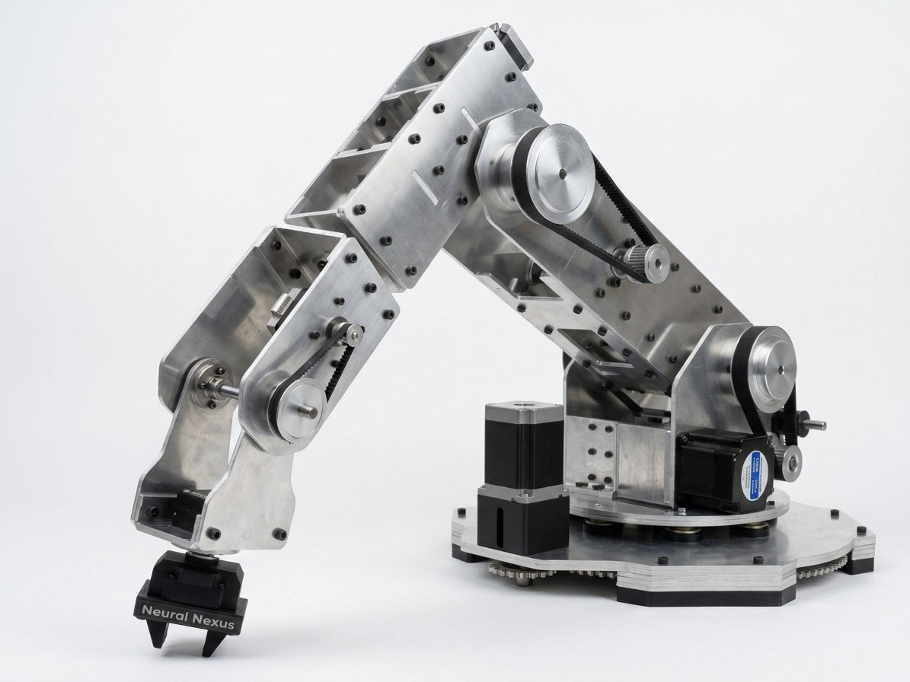

6-DOF Robotic Arm
A 6-DOF robotic arm built entirely from scratch: mechanics, firmware, kinematics, and a live digital twin, all driven from a single command.

Overview
A fully custom 6-axis robotic arm, not a kit. Every layer was designed, debugged and integrated in-house. A SolidWorks CAD assembly feeds a Simscape Multibody digital twin, which shares its rigid-body model with a MATLAB inverse-kinematics solver; solved trajectories stream over USB CDC to an STM32H743 running at 420MHz, which drives six stepper axes and a gripper while reading back position from six AS5047P absolute encoders. The headline feature: a single command moves the physical arm and its 3D digital twin simultaneously, in sync, in real time.
Motor selection followed one rule: torque scales with how much arm you're carrying. The base and shoulder/elbow joints (which lift the entire outboard arm) run on NEMA 24 and NEMA 23 steppers through closed-loop CL57T drivers, so a missed step gets detected and corrected before it becomes a dropped arm. The wrist joints only have to position the end-effector, so they run smaller NEMA 17s on onboard TMC2209 drivers instead. All six axes are computed independently inside a single 2kHz timer interrupt running a trapezoidal accelerate–cruise–decelerate profile.
The kinematic model is the same rigidBodyTree on both sides of the USB link: MATLAB's inverseKinematics solver turns a target position and orientation into six joint angles, which are blended into a quintic (5th-order) trajectory for zero velocity and acceleration at both ends of every move, so the arm starts and stops smoothly instead of jerking. Along the way this project proved out a real kinematics constraint: a 6-DOF arm cannot hold both tip position and tool orientation fixed while it reconfigures (that needs a 7th degree of freedom), so every demo deliberately locks one and sweeps the other.
The hardest bug wasn't mechanical; it was a phantom one. Encoder readings on a stationary joint appeared to swing 60–70° between samples, and slowing the SPI clock down made it worse, which ruled out a signal-integrity problem. The actual cause was a −1 error sentinel from a failed read being silently averaged in with valid samples; filtering it out before averaging brought repeatability to ±0.01°. A separate Web Serial control panel now lets anyone drive the arm from Chrome or Edge alone, offering recorded sequences, per-joint sliders and a live command log, with no MATLAB license required to operate it, even though MATLAB remains the authoring environment for kinematics and trajectory design.
Key Features
- 01Tiered stepper drivetrain (NEMA 24/23/17) matched to torque and stall risk per joint, with closed-loop CL57T drivers on the two lifting joints
- 02Six AS5047P absolute magnetic encoders (14-bit, SPI) giving every joint real position feedback
- 032kHz trapezoidal motion-profile ISR on an STM32H743 @ 420MHz, computing accel/cruise/decel independently per axis
- 04MATLAB rigidBodyTree + inverseKinematics solver with quintic-blended trajectories for jerk-free motion
- 05Synchronised digital twin — one command drives the physical arm and the Simscape 3D model together, in real time
- 06Custom control PCB (Altium Designer) integrating the STM32H743, encoder SPI bus and mixed open-drain/push-pull driver interfacing
- 07Standalone Web Serial control panel — browser-only jogging, recorded sequences and live command logging, no MATLAB or Python required to operate
- 08OpenCV colour-segmentation and homography pipeline converting camera pixels into real-world XYZ targets for the inverse-kinematics solver
Demos
Vision-Guided Object Detection
Object Localization & Reach
Wrist Roll
Base Rotation
Motors & Drivers Bench Test
Early Prototype Build
 YouTube
YouTube
Full Summary Video